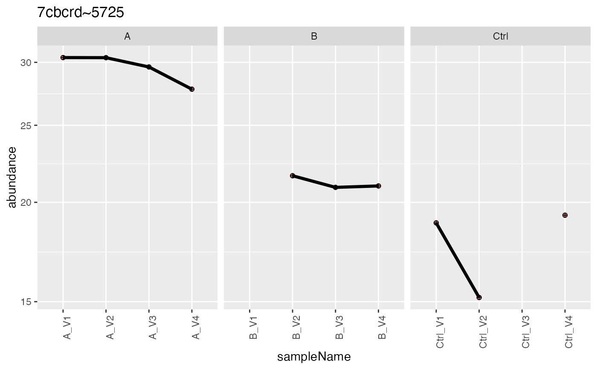

R/tidyMS_aggregation.R
intensity_summary_by_hkeys.RdSummarizes the intensities within hierarchy
intensity_summary_by_hkeys(data, config, func)- a function working on a matrix of intensities for each protein.
retuns function object
Other aggregation:
INTERNAL_FUNCTIONS_BY_FAMILY,
aggregateTopNIntensities(),
aggregate_intensity(),
medpolishPlydf_config(),
medpolishPlydf(),
medpolishPly(),
medpolish_protein_quants(),
plot_aggregation(),
plot_hierarchies_add_quantline(),
plot_hierarchies_line_df(),
plot_hierarchies_line(),
summarizeRobust_config(),
summarizeRobust()
Other deprecated:
INTERNAL_FUNCTIONS_BY_FAMILY,
medpolish_protein_quants(),
workflow_DIA_NA_preprocessing(),
workflow_correlation_preprocessing_protein_intensities()
bb <- prolfqua_data('data_ionstar')$filtered()
#> Column added : nr_peptide_Id_IN_protein_Id
stopifnot(nrow(bb$data) == 25780)
config <- bb$config$clone(deep = TRUE)
data <- bb$data
x <- intensity_summary_by_hkeys(data, config, func = medpolishPly)
#> starting aggregation
#> Warning: medpolish() did not converge in 10 iterations
#> Warning: medpolish() did not converge in 10 iterations
res <- x("unnest")
x("unnest")$data |> dplyr::select(config$table$hierarchyKeys()[1] , "medpolish")
#> # A tibble: 3,260 × 2
#> protein_Id medpolish
#> <chr> <dbl>
#> 1 sp|P21589|5NTD_HUMAN~1527~P21589 53281919.
#> 2 sp|P21589|5NTD_HUMAN~1527~P21589 53108622.
#> 3 sp|P21589|5NTD_HUMAN~1527~P21589 51768575
#> 4 sp|P21589|5NTD_HUMAN~1527~P21589 48923212.
#> 5 sp|P21589|5NTD_HUMAN~1527~P21589 46757962.
#> 6 sp|P21589|5NTD_HUMAN~1527~P21589 43139562.
#> 7 sp|P21589|5NTD_HUMAN~1527~P21589 49301991.
#> 8 sp|P21589|5NTD_HUMAN~1527~P21589 46173388.
#> 9 sp|P21589|5NTD_HUMAN~1527~P21589 47789438.
#> 10 sp|P21589|5NTD_HUMAN~1527~P21589 61505569.
#> # … with 3,250 more rows
#> # ℹ Use `print(n = ...)` to see more rows
config <- bb$config$clone(deep = TRUE)
config$table$hierarchyDepth <- 1
x <- intensity_summary_by_hkeys(data, config, func = medpolishPly)
#> starting aggregation
#> Warning: medpolish() did not converge in 10 iterations
#> Warning: medpolish() did not converge in 10 iterations
x("unnest")$data
#> # A tibble: 3,260 × 7
#> protein_Id sampl…¹ dilut…² run_Id raw.f…³ isotope medpo…⁴
#> <chr> <chr> <chr> <chr> <chr> <chr> <dbl>
#> 1 sp|P21589|5NTD_HUMAN~1527~P21… b~02 b 02 b03_02… light 5.33e7
#> 2 sp|P21589|5NTD_HUMAN~1527~P21… c~03 c 03 b03_03… light 5.31e7
#> 3 sp|P21589|5NTD_HUMAN~1527~P21… d~04 d 04 b03_04… light 5.18e7
#> 4 sp|P21589|5NTD_HUMAN~1527~P21… e~05 e 05 b03_05… light 4.89e7
#> 5 sp|P21589|5NTD_HUMAN~1527~P21… e~06 e 06 b03_06… light 4.68e7
#> 6 sp|P21589|5NTD_HUMAN~1527~P21… d~07 d 07 b03_07… light 4.31e7
#> 7 sp|P21589|5NTD_HUMAN~1527~P21… c~08 c 08 b03_08… light 4.93e7
#> 8 sp|P21589|5NTD_HUMAN~1527~P21… b~09 b 09 b03_09… light 4.62e7
#> 9 sp|P21589|5NTD_HUMAN~1527~P21… a~10 a 10 b03_10… light 4.78e7
#> 10 sp|P21589|5NTD_HUMAN~1527~P21… a~11 a 11 b03_11… light 6.15e7
#> # … with 3,250 more rows, and abbreviated variable names ¹sampleName,
#> # ²dilution., ³raw.file, ⁴medpolish
#> # ℹ Use `print(n = ...)` to see more rows
xnested <- x()
dd <- x(value = "plot")
dd$medpolishPly[[1]]
#> # A tibble: 20 × 6
#> sampleName dilution. run_Id raw.file isotope medpo…¹
#> <chr> <chr> <chr> <chr> <chr> <dbl>
#> 1 b~02 b 02 b03_02_150304_human_ecoli_b_3ul_… light 5.33e7
#> 2 c~03 c 03 b03_03_150304_human_ecoli_c_3ul_… light 5.31e7
#> 3 d~04 d 04 b03_04_150304_human_ecoli_d_3ul_… light 5.18e7
#> 4 e~05 e 05 b03_05_150304_human_ecoli_e_3ul_… light 4.89e7
#> 5 e~06 e 06 b03_06_150304_human_ecoli_e_3ul_… light 4.68e7
#> 6 d~07 d 07 b03_07_150304_human_ecoli_d_3ul_… light 4.31e7
#> 7 c~08 c 08 b03_08_150304_human_ecoli_c_3ul_… light 4.93e7
#> 8 b~09 b 09 b03_09_150304_human_ecoli_b_3ul_… light 4.62e7
#> 9 a~10 a 10 b03_10_150304_human_ecoli_a_3ul_… light 4.78e7
#> 10 a~11 a 11 b03_11_150304_human_ecoli_a_3ul_… light 6.15e7
#> 11 b~12 b 12 b03_12_150304_human_ecoli_b_3ul_… light 5.75e7
#> 12 c~13 c 13 b03_13_150304_human_ecoli_c_3ul_… light 5.01e7
#> 13 d~14 d 14 b03_14_150304_human_ecoli_d_3ul_… light 5.90e7
#> 14 e~15 e 15 b03_15_150304_human_ecoli_e_3ul_… light 6.13e7
#> 15 e~16 e 16 b03_16_150304_human_ecoli_e_3ul_… light 5.68e7
#> 16 d~17 d 17 b03_17_150304_human_ecoli_d_3ul_… light 5.99e7
#> 17 c~18 c 18 b03_18_150304_human_ecoli_c_3ul_… light 5.78e7
#> 18 b~19 b 19 b03_19_150304_human_ecoli_b_3ul_… light 6.00e7
#> 19 a~20 a 20 b03_20_150304_human_ecoli_a_3ul_… light 5.70e7
#> 20 a~21 a 21 b03_21_150304_human_ecoli_a_3ul_… light 5.60e7
#> # … with abbreviated variable name ¹medpolish
dd$plot[[2]]
#> Warning: Removed 15 rows containing missing values (geom_point).
#> Warning: Removed 3 rows containing missing values (geom_point).

# example how to add peptide count information
tmp <- summarize_hierarchy(data, config)
tmp <- dplyr::inner_join(tmp, x("wide")$data, by = config$table$hkeysDepth())